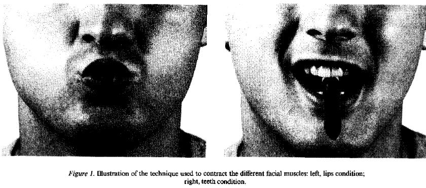
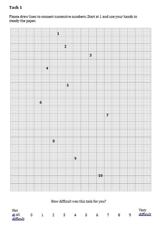
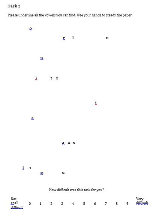
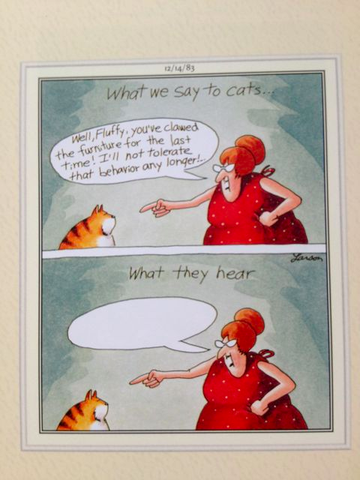
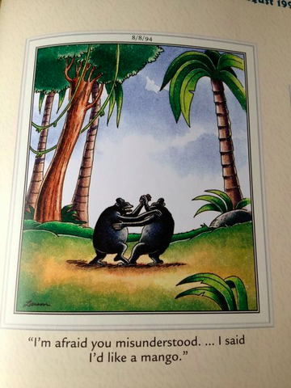
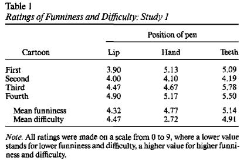
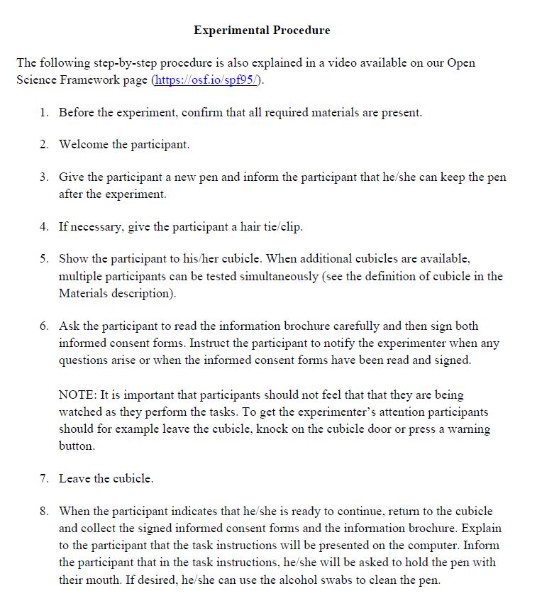

October 28, 2015
Replication Reports
- Recent outcry over crisis in psychology
- Is it an issue?
- Open Science Initiative
Strack et al. (1988) Replication Report
- Sponsored by APS
- "Registered Replication Reports consist of multi-lab, high-quality replications of important experiments in psychological science along with comments by the authors of the original studies" (APS, 2015)
- Attempt to replicate the main findings of the Facial Feedback Hypothesis
The Facial Feedback Hypothesis

Fake Motor Task 1

Fake Motor Task 2

Cartoon Rating

Cartoon Rating

The Facial Feedback Hypothesis
- When smiling behavior is facilitated…
- Cartoons rated as most humerous
- When smiling behavior is inhibited…
- Cartoons rated least humerous
The Facial Feedback Hypothesis

Strack RRR Procedure
- Very systematic
- 24 steps detailing how to interact/run/exclude participants
- Specific data format for recording data (similar to what we already do)
- Video explaining the process
Instructions

Additional Moderators and Mediators
- The Duchenne smile
- Type of humor
- Respiratory sinus arrhythmia (RSA)
- Higher RSA linked to higher social functioning
Video